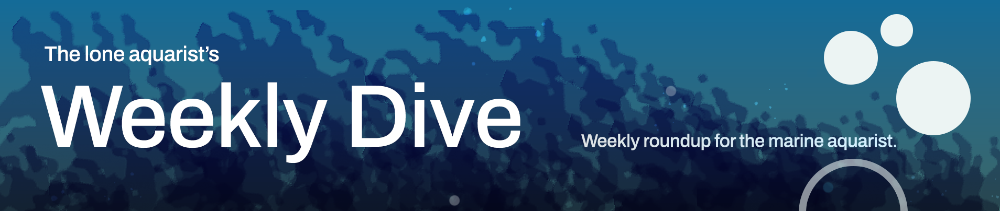
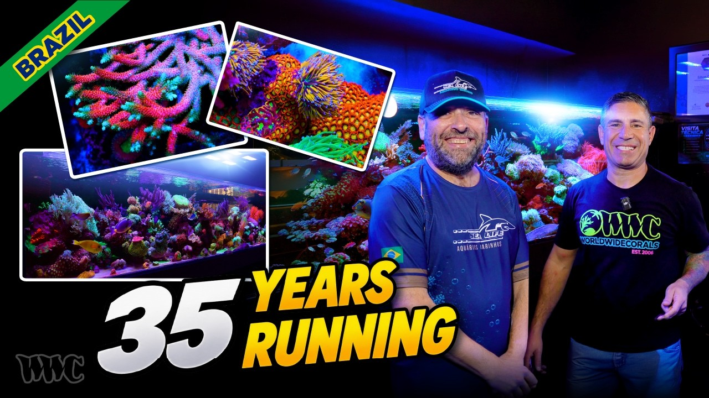

Friday, November 20, 2026 · 31 items · back issues
Howdy, it's Isaac again.
Happy Friday, reefing family, and welcome back to my Weekly Dive.
Heavy week; settle in.
Here are the biggest things worth knowing:
Let's dive into the news touching our hobby…
Lance Ichinotsubo explains marine ich (Cryptocaryon irritans) biology and behavior. Essential disease pathology for anyone maintaining saltwater fish.
Reefs.com · Afishionado · Nov 18 · reefs.com
Reefs app updated to v7.5 with guides, coral ID, event calendar, and forum rebuild. Community infrastructure for hobbyists looking for local swaps and information.
Reefs.com · Josh Saul · Nov 18 · reefs.com
IMARCS has achieved captive spawning of the carpet anemone Stichodactyla haddoni in Japan. Anemone reproduction in captivity opens pathways for sustainable supply and study of a key reef symbiont.
Reefs.com · xeniaforever · Nov 17 · reefs.com
Reef Beef podcast episode discusses retail practice of selling difficult-to-keep livestock. Direct critique of hobbyist experience and industry ethics relevant to informed aquarium stocking.
5 min Reef Beef · Reef Beef Podcast · Nov 15 · youtube.com
Polo Reef documents challenges with 450 arriving Anthias, quarantine issues, and coral pests in their 17,000-gallon display. Real-world husbandry problems at scale offer practical lessons for managing large mixed systems.
15 min Polo Reef · Polo Reef by Andrew Sandler · Nov 20 · youtube.com
Coral farm implements copepod cultivation system for live food production. Scaling live-feed propagation directly improves nutrition and husbandry protocols in captive coral systems.
Reefs.com · Tidal Gardens · Nov 19 · reefs.com
Five-year field experiment shows nutrient enrichment and consumer exclusion both influence coral survival and microbiome stability during and after marine heatwaves. Local stressor management directly affects reef resilience in aquarium-relevant ways.
Scientific Reports · Alex D. Vompe et al. · Nov 16 · doi.org
Non-zooxanthellate coral (Caryophyllia inornata) maintains normal skeletal structure under acidified conditions at a natural CO2 vent. Some corals show resilience to acidification, shifting expectations for end-of-century survival.
+1 similar BMC Biology · Arianna Mancuso et al. · Nov 18 · doi.org
Chromosome-level genome of precious red coral reveals molecular mechanisms of calcification and pigmentation in octocorals. Genomic insight into octocoral biomineralization advances understanding of soft-coral physiology.
Marine Life Science & Technology · Yanshuo Liang et al. · Nov 15 · doi.org
Study quantifies metabolic rates of two key calcifying reef macroalgae—Halimeda and Lithophyllum—over seasonal cycles in the Red Sea. Understanding their calcification and production underpins nutrient dynamics in reef systems.
Frontiers in Marine Science — Journal · Maggie D. Johnson · Nov 20 · frontiersin.org
Study of benthic community and herbivore interactions across Caribbean reef sites under thermal and chronic stress. Field data on coral-algae-grazer dynamics informs tank management.
Frontiers in Marine Science — Journal · David Arturo Ortega-Vargas · Nov 18 · frontiersin.org
Environmental Microbiome · Vijaya Raghavan Rangamaran et al. · Nov 17 · doi.org
Environmental DNA metabarcoding maps the distribution of an endangered Taiwanese scleractinian coral difficult to locate by conventional survey. The technique enables conservation strategies and applies broadly to locating cryptic reef species in the field.
BMC Marine Science · Yi‐Ling Chiu et al. · Nov 16 · doi.org
Research on symbiotic relationship between young fish and protective crustacean. Headline alone provides insufficient detail to assess reef relevance or novelty.
Australian Society for Fish Biology — Bluesky · Nov 18 · bsky.app
ACER Ventura staghorn coral strain shows strong growth over one year in captive restoration. Florida's most resilient wild strain, intended for spawn in 2027.
Coral City Camera — Bluesky · Nov 18 · bsky.app
Laboratory-reared Acropora cervicornis 'Ventura' staghorn coral shows exceptional growth over 317 days in Miami. Captive-bred resilient genotypes offer hope for reef restoration if the strain can be scaled and outplanted.
Coral City Camera — Bluesky · Nov 17 · bsky.app
Scripps Pier has recorded 73 record-high water-temperature days since January 2026. Sustained marine heatwave conditions signal ecological stress relevant to understanding reef bleaching drivers.
Scripps Institution of Oceanography — Bluesky · Nov 13 · bsky.app
Four new coral records from Tanzania combined with published WIO data reconstruct 160 years of Indian Ocean temperature, revealing Indo-Pacific climate interactions. Understanding wild reef oceanography illuminates the conditions that shape coral resilience.
Journal of Climate · Yunfan Chen et al. · Nov 16 · doi.org
Laboratory-grown Mediterranean seagrass (Ericaria amentacea) was outplanted and monitored for 22 months, tracking survival from cultivation through field establishment. Restoration outcomes for foundation macroalgae inform what works in active reef recovery.
Frontiers in Marine Science — Journal · Drosos Koutsoubas · Nov 18 · frontiersin.org
Coral skeletal records from the Northwest Pacific reveal temperature variability driven by NPGO and Victoria Mode back to the 1800s. Coral paleoclimate records extend understanding of Pacific climate patterns affecting reef systems.
Climate of the past · Saori Ito et al. · Nov 18 · doi.org
Coral health survey in the Gulf of California's Espíritu Santo Archipelago documents disease and environmental stress in an Eastern Tropical Pacific marine park. Local coral-health assessment informs regional reef status and conservation priorities.
Revista de Biología Tropical · José Carlos Fernando San Esteban-Belmar et al. · Nov 17 · doi.org
Mexican researchers document a community-led reef monitoring program in Puerto Morelos, strengthening local stewardship and generating ecological data. Community participation bridges conservation knowledge and local reef protection.
Revista de Biología Tropical · Ana Molina‐Hernández et al. · Nov 17 · doi.org
UN proposal to ban deep-sea bottom trawling on seamounts withdrawn after opposition led by Japan. Policy failure threatens deep-reef ecosystems that inform reef science.
UBC Oceans — Bluesky · Nov 18 · bsky.app
Infrared spectroscopy offers a presumptive method to identify illegal black coral trade and distinguish genuine specimens. This tool supports enforcement of CITES protections on threatened Antipatharia species.
Australian Journal of Forensic Sciences · Barbara H. Stuart et al. · Nov 17 · doi.org
North Sea oyster populations depleted by trawling; restoration underway using filter feeders. Historical ecosystem collapse and recovery relevant to reef resilience principles.
UBC Oceans — Bluesky · Nov 18 · bsky.app
A new AI-assisted framework maps coral reef extent in the South China Sea with improved precision over global datasets. Better reef mapping supports conservation planning and monitoring in optically complex tropical waters.
International Journal of Digital Earth · Xue Liu et al. · Nov 17 · doi.org
The Trump administration is pursuing rollback of Pacific marine protections for culturally significant and ecologically vital waters. Changes to protected-area status directly affect wild-reef conservation.
UBC Oceans — Bluesky · Nov 16 · bsky.app
Historical study of red coral (Corallium rubrum) research, fishing, and regulation in Algeria and Italy from the 1800s onward. Red coral's role in Mediterranean reefs and its trade history matters, though the focus is historiography rather than current biology.
The European Zoological Journal · Giorgio Bavestrello · Nov 18 · doi.org
Port Phillip Bay drifting seaweed biomass declined from the 1990s; reduced nitrogen inputs suspected but unconfirmed. Nutrient cycling in coastal ecosystems informs reef systems, though causation remains uncertain.
Great Southern Reef Foundation — Bluesky · Nov 15 · bsky.app
Coral City Camera tracks 325 days of a monitored staghorn coral (Acerventura) in the Rubble Zone. Long-term visual documentation of a threatened species under Florida's restoration efforts provides useful recovery data.
Coral City Camera — Bluesky · Nov 19 · bsky.app

35 Years in the Hobby: Inside Brazil's Ultimate Mixed Reef Display | São Paulo, BrazilProfile of a 400-gallon mixed-reef display in Brazil operating 35 years with Acropora, soft corals, and anemones together, showing old-school success contrary to modern dogma. Demonstrates that rigid taxonomic separation may not be essential for stability.
13 min World Wide Corals · Nov 19 · youtube.com
One email a week, free. Every item links to its source.
Prefer a feed reader? Follow along by RSS.